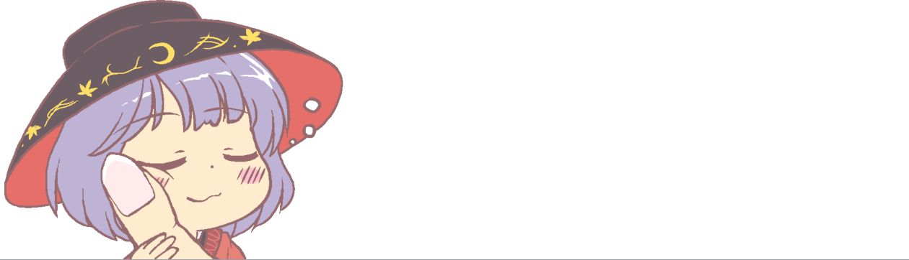
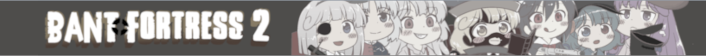

Kogasatopia .vpk files
Place these in /tf/custom. Bold are highly reccomended!
NEW : Branch of Hourai - The Wrap Assassin
Touhou Class Replacements - 2024 Ed.
Nohats for Touhou Class Replacements
Touhou Health & Ammo Pickups
TF2 Sign & Poster Replacements
Touhou Sounds - Cow Mangler, Teleporters, Killsound
Mini Hakkero - The Duelling Badge
Touhou Gibs - 2022 Ed.
Yukkuri Ball & Sounds - The Sandman
Danzai TV - Televisions
Hourai Elixir & Armpit Juice - Bonk Atomic Punch
Kanmarisa Eyes - The Backburner
Roukanken - The Half-Zatoichi
Haniwa - The Eyelander
Kogasa's Umbrella - The Skullcutter
Rod of Remorse - The Market Gardener
Rolled Bunbunmaru Issue - The Atomizer
Reimu Yukkuri - The Beach Ball
Whale Warpaint - Smissmas Sweater
